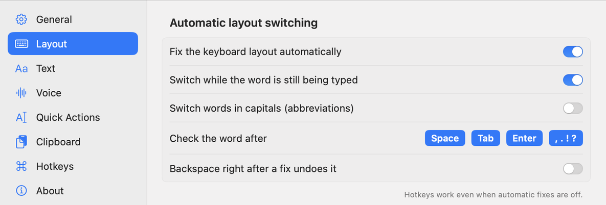
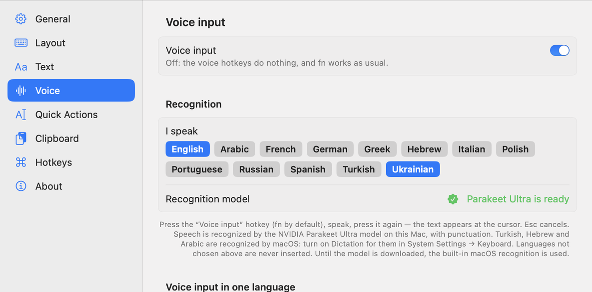

Just type. Klavko fixes the rest.
Typed a word in the wrong layout? Klavko switches it as you type. It also fixes typos, types what you say, translates and reads text from the screen.
Free · macOS 14 Sonoma or later · Windows 10 and 11 in beta
Wrong layout? Not anymore.
A few things Klavko fixes for you, right where you type.
ghbdsn→привітfixed by the third letterруддщ→helloand back the other wayteh→theobvious typosHEllo→Helloa stuck ShiftHi,there→Hi, therea space after punctuationty→thank youyour own replacementsOne small app. Six helpers.
Klavko lives in the menu bar. Turn on what you need, leave the rest off.
Keyboard layout
Switches between the layouts of 13 languages, including Ukrainian, English, German, French, Polish and Turkish. ⇧⇧ switches a word by hand.
Typos and tidy text
Fixes obvious typos, adds a capital at the start of a sentence, turns ... into … and " into “” or «».
Voice input
Press fn, speak, press it again: the text appears at the cursor, with punctuation. Recognized on your Mac.
Translation
Select text anywhere and press ⌘ twice. Return replaces the selection with the translation.
Text from the screen
Press ⌃Q and select an area: Klavko reads the text, even in a picture, and translates it. QR codes too.
Clipboard history
⌥⌘V shows everything you copied: text, links, pictures and files, with search. Passwords are never kept.

Hotkeys you'll remember.
All of them can be changed in Settings.
Free. For good.
No account, no subscription, no ads.
Mac
macOS 14 or later. Translation needs macOS 15.
Download for MacHomebrew
Install and update from the Terminal.
brew install --cask stepsergius/klavko/klavkoWindows (beta)
Windows 10 and 11. Pick the x64 file for most computers, arm64 for Snapdragon laptops.
Download for WindowsYour text stays yours.
Klavko runs entirely on your Mac. What you type and dictate, translations and the clipboard history are never sent anywhere. The internet is needed only to download the speech model and translation languages once, and to check GitHub for a new version. The one exception is Google AI voice input, if you turn it on yourself.
Questions
macOS says it can't verify Klavko. What do I do?
Klavko isn't distributed through the App Store. The first time you open it, macOS may block it: open System Settings → Privacy & Security, scroll down and click Open Anyway. You do this only once; updates install with one click.
Why does Klavko need Accessibility access?
To see which keys you press and to replace a word typed in the wrong layout, macOS requires the Accessibility permission. Klavko keeps only the text since the last click or Return in memory, and never saves or sends it.
The layout doesn't switch. Why?
You need at least two keyboard layouts of the supported languages. Standard macOS layouts work best (System Settings → Keyboard → Input Sources). Chinese, Japanese and Korean use input methods and aren't supported.
Is it really free?
Yes, all of it. If Klavko helps you, you can thank the author, but you don't have to.
Where do I report a bug or ask a question?
In the Telegram group t.me/klavko. The Windows version is a beta, so reports there help a lot.
Like Klavko?
It's made by one person in Ukraine. A thank-you helps keep it free and growing.